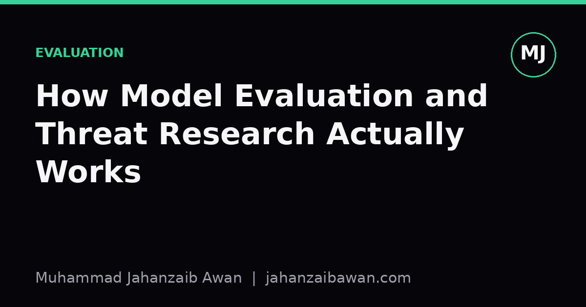

How Model Evaluation and Threat Research Actually Works
Behind the marketing claims and leaderboard scores sits a slower, messier process of adversarial probing, red-teaming, and leakage-aware testing. Here is what that actually looks like.

The leaderboard is the least interesting part
When a new model drops, the number everyone quotes is usually a benchmark score: some percentage on a reasoning test, a coding suite, a safety refusal rate. These numbers are easy to report and easy to misread. They tell you how a model performed on a fixed set of questions under fixed conditions, which is a narrow and often fragile signal. Organisations that take evaluation seriously treat the leaderboard score as a starting point for investigation, not a conclusion.
The first thing a careful evaluator asks is not 'how high is the score' but 'could this score be contaminated'. Many public benchmarks have existed online for years, scraped into training corpora many times over. If a model has seen a benchmark's questions, or close paraphrases of them, during training, its score tells you about memorisation rather than capability. Detecting this is genuinely hard: you cannot just grep for exact string matches, because paraphrasing and translation hide the overlap. Serious evaluators instead build held-out test sets written after a model's training cutoff, or they perturb existing questions (changing names, numbers, surface wording) and check whether performance collapses. A model that scores 90 percent on the original phrasing but 60 percent on a lightly perturbed version has told you something important about what that 90 percent actually meant.
This matters practically because a lab deciding whether to deploy a model, or a regulator deciding whether to trust a safety claim, is making a decision based on these numbers. If the underlying test is leaky, the decision is built on sand. I think this is the single most underappreciated failure mode in applied machine learning: not a wrong metric, but a trustworthy-looking metric measuring the wrong thing.
Red-teaming: adversaries, not averages
Standard benchmarks measure average-case behaviour. Threat research is concerned with worst-case behaviour, which is a completely different statistical question. A model might refuse a harmful request correctly 999 times out of 1000 on a benchmark, but if the 1000th case is findable by a motivated person within an afternoon of trying, the benchmark number was never the right thing to optimise.
This is why red-teaming looks less like running an eval script and more like a structured adversarial process. A red team will typically work through categories of attack systematically: direct requests, requests wrapped in fictional framing, requests split across multiple turns so no single message looks suspicious, requests in a language the safety training was weaker on, and prompts that exploit the model's tendency to comply with authoritative-sounding instructions. Each category gets tested not once but dozens or hundreds of times with variations, because a single failure could be noise and a single success could be luck.
Concretely, imagine a model refuses a risky request 98 percent of the time across a thousand straightforward phrasings. That sounds reassuring. But a competent red team doesn't stop there; they try ten different jailbreak templates against the same underlying request. If even one template pushes the refusal rate down to 40 percent, the headline 98 percent figure was describing a model that is easy to manipulate once you know the trick, and tricks propagate fast once discovered. The real deliverable from a red-teaming exercise is not a single number but a map of where the failure surface is thin, which categories of attack work, and how much effort an adversary needs to invest.
Good red-teaming also tracks transferability: does a jailbreak that works on one model version work on the next, or on a different model family entirely? This matters for prioritisation. A fragile, model-specific exploit is a lower priority than a structural weakness that generalises across architectures, because the structural one suggests something about training methodology rather than a one-off bug.

Threat modelling before testing
Before any of this testing starts, serious evaluation work begins with a threat model: who might misuse this system, what would they be trying to achieve, and what is the realistic ceiling of harm given other barriers that already exist. This sounds obvious but it changes what gets tested. A model's ability to describe a well-known fact that is already in any introductory textbook is a very different risk to a model lowering the barrier to something that previously required specialist access or tacit expertise.
This distinction, sometimes called 'uplift', is central to how capability evaluations in sensitive domains are actually designed. The question is rarely 'can the model produce this information', since a huge amount of information is already searchable. The question is 'does interacting with this model meaningfully reduce the time, cost, or expertise a person would otherwise need'. Measuring uplift requires a control condition: give one group access to the model and another group access only to standard resources like search engines or textbooks, then compare how far each group gets on a defined task within a fixed time. Without that control group, you cannot distinguish 'the model is dangerous' from 'this information was always two clicks away'.
This is also where reproducibility becomes non-negotiable rather than nice-to-have. If an evaluation finds a concerning capability, other researchers and policymakers need to be able to check that finding without relying on trust alone. That means documenting exact prompts, sampling parameters, the model version and checkpoint, and the scoring rubric used by human reviewers if any. Vague descriptions like 'we tested the model on dangerous chemistry questions' are not evaluations in any rigorous sense; they are anecdotes dressed up as findings.
What this means in practice
If you take one thing from how this work actually happens, let it be this: a single score is never the output of a good evaluation, a profile is. That profile includes contamination checks against the specific benchmark used, adversarial stress tests rather than single-pass averages, an explicit threat model defining what harm would even mean in context, and a control condition that isolates the model's unique contribution from information that was already accessible elsewhere. Any report that skips these steps and leads with a headline accuracy figure is giving you marketing, not evaluation, regardless of how technical it sounds.